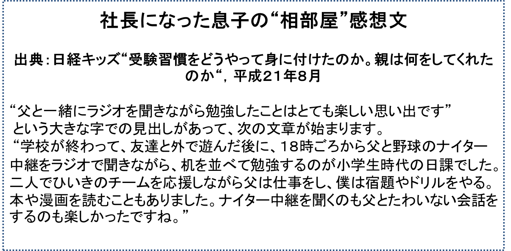

社長になった息子の“相部屋”感想文
出典：日経キッズ“受験習慣をどうやって身に付けたのか。親は何をしてくれたのか“，平成２１年８月
“父と一緒にラジオを聞きながら勉強したことはとても楽しい思い出です”
という大きな字での見出しがあって、次の文章が始まります。
“学校が終わって、友達と外で遊んだ後に、１８時ごろから父と野球のナイター中継をラジオで聞きながら、机を並べて勉強するのが小学生時代の日課でした。二人でひいきのチームを応援しながら父は仕事をし、僕は宿題やドリルをやる。本や漫画を読むこともありました。ナイター中継を聞くのも父とたわいない会話をするのも楽しかったですね。”
付録：えっ！勉強していると思っていたのに本や漫画を読んでいたって！！

えっ！ 宿題やドリルを一生懸命やっていると思っていたのに、本や漫画を読んでいたって！！ 本当？
いや、こう言う私もたまには週刊誌をペラペラめくって読んでいたことがありました。息子は仕事ばかりしている父と思っていたでしょうが…………。
相手のしていることにはお互い全くの無関心だったのでしょう。私は
“息子は勉強をしている”
と考え、息子は
“父は仕事をしている”
と考えて、過ごしていました。
このこと、つまり相手が何をしているのかはお互い全くの無関心であったことは、今にして考えてみると、私にとって生涯の誇りであり、最高の思い出であったと感じます。
以上のことに関連して思い出すお話があります。米国で仕事をしていたときのお話です。
ある日、上司が私のオフィスにやってきました。そのときの会話を紹介しましょう。
| 上司 |
「あなたは、日本では大学院生達をどんな姿勢で指導していましたか？」 |
| |
| 私 |
「うーん。特に何も意識していませんでした」 |
| |
| 上司 |
「そうですか。それでは部下を指導する際に大切な心がけを教えてあげましょうか。日本に帰ってから役に立つでしょうから」 |
| |
| 私 |
「お願いします。ぜひ教えて下さい」 |
| |
| 上司 |
「部下の仕事ぶりを背後からそっと眺めて見る姿勢は厳につつしむべきでしょう。部下の仕事ぶりがどんなに気になっても、これを盗み見るようなことをしてはなりません。真正面から堂々と見る姿勢がとても大切なことなのですよ」 |
私はこのとき、なるほど！ と納得しました。しかし、日本に帰ってきて半世紀近くに及ぶ先生生活の中で、あるいは子育ての場で、この上司のアドバイスは全く実行されませんでした。つまり背後から見るという姿勢は論外として、真正面から堂々と見ることもしませんでした。
大学では１０数名の大学院学生さん、数名の学部の学生さん一人ひとりが毎週一度、仕事（研究）の報告のため、私のオフィスに来てくれます。
私は学生さんと一緒にコーヒーを飲みながら、
“わっすごい。良い結果が出たね！ 驚いた！”
“先週より一歩、二歩前進したね”
“学会発表に十分持っていけるよね。これは”
こんなことを話していたと思います。会話のほとんどは心の底から出ていた褒め言葉でした。何事も前向きに明るく明るくとらえるという姿勢こそが、学生さんだけではなく、私自身にも先生稼業のやりがいを感じさせてくれる源泉であったと思います。自分自身も相手を褒めることにより、元気になります！お互いに仕事（研究）に対する気分を盛り上げることができて、とても楽しいのです。
生涯ただの一度も
“うーん。もう少し頑張ろうか”
“ＯＫ！ 一つの山を越えた。でも山はまだ二十も三十もある。頑張ろうね”
といった言葉は、私の口からは出てきませんでした。
大学院学生さん達、学部の学生さん達は幾つかの学生部屋に別れて仕事をしています。私は、この部屋を訪ねて“真正面から仕事ぶりを見る”といったことは、生涯ただの一度も実行しませんでした。
子育ての場でも同じことで、向いにすわって勉強をしている息子の勉強振りを、背後からは勿論、真正面から堂々とながめるといったことも全くなかったのです。
私は学生さんに対し、常に
“OK！一つの山を越えた。次はあの近くの山、どうだろう。登ってみたら面白そうだぞ”
といった内容のことを言っていたと思います。
私自身も、日頃取り組んでいる研究で一つの近くの目標を越えたら、“OK！十分な成果だ！”と心の中で叫び、安心し、とても楽しくなります。そして次の目標に挑戦する意欲が不思議なほど湧いてきます。
♪♪♪♪♪ここでお話は例によって脱線です♪♪♪♪♪
皆さんは朝青竜という横綱を覚えていらっしゃるでしょうか。すばらしく強い横綱で無敵の勢いだったといってよいでしょう。
ある初場所優勝後の横綱に、アナウンサーさんが
“今年の横綱の目標をお聞かせて下さい。六場所全部優勝ですか？”
といった内容の質問をしました。
朝青竜は即座に
“モンゴルの人は草原を渡るとき、近くの山を目指して歩ぎます。近くの山がまづは第一目標です。私も三月場所に優勝することを目指して、頑張ります。それ以上の目標はありません”
と答えていたと思います。
モンゴルの人は長い旅をするとき、幾つもの山を越えて行かねばならないと考えると、それだけで多分気が重くなるのでしょうね。モンゴル出身の大横綱朝青龍も初場所に優勝した自分を自分自身で思い切り褒めてあげ、喜び、満足し、その気分の延長線上で3月場所（春場所）を目指して勇気百倍で取り組むことができたのではないでしょうか。春場所は勿論、五月場所、夏場所、秋場所、十一月場所全て優勝したいなどと考えると、それだけで気分が重くなり、日ごろの練習にも気合が入らなくなってしまうというのではないでしょうか。
私は息子がドリルをたった一題しか解かなかった日でも、ノートに大きく「努力賞」と書いてあげました。
息子は大喜びし、次は少なくとも一題は解いてやろうと考えます。そしてもし一題解き終わったら、よしもう一題解いてみよう。お父さん、きっとびっくりするぞ、と考えるでしょう。この延長線上でときには、解いた問題が二十題以上となって“三冠王”という大きな大きなご褒美を手に入れることができたのでした。